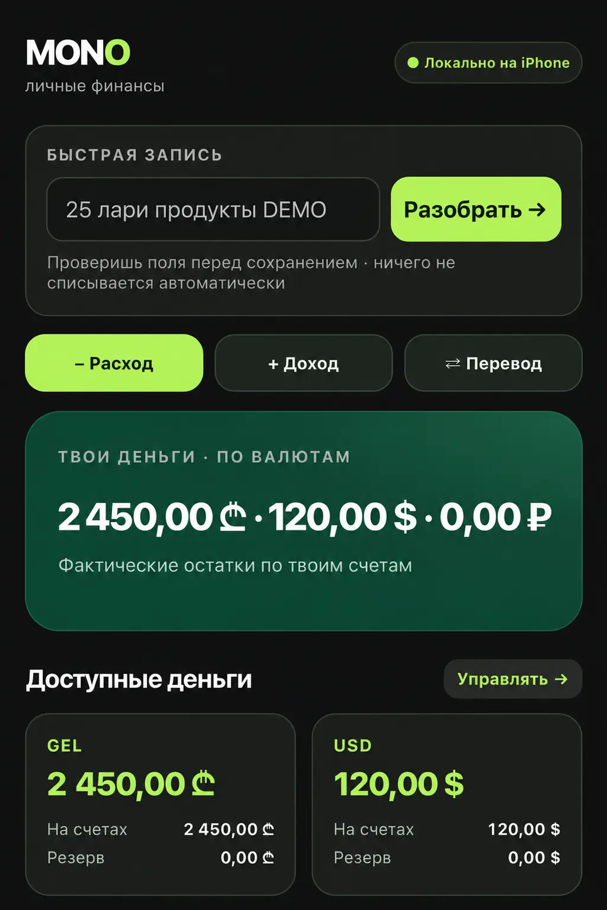
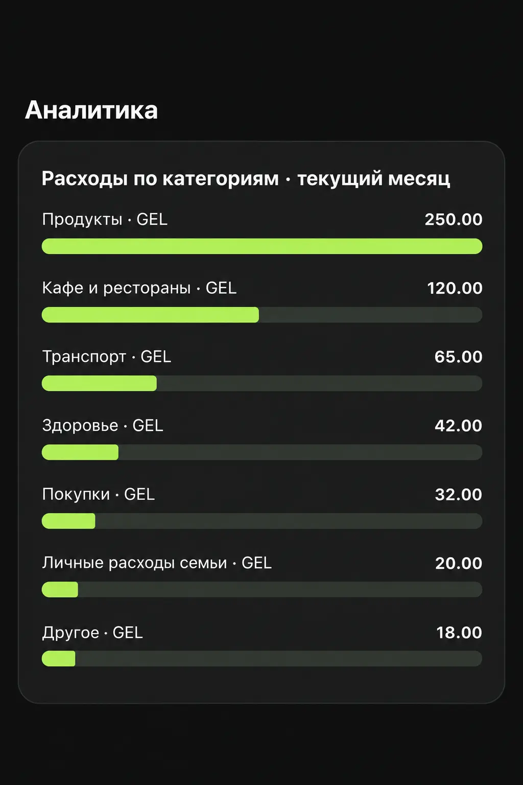
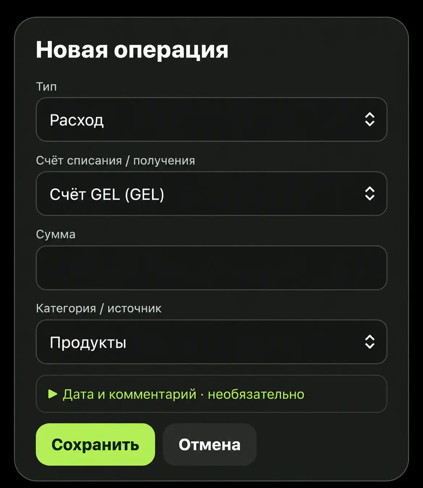
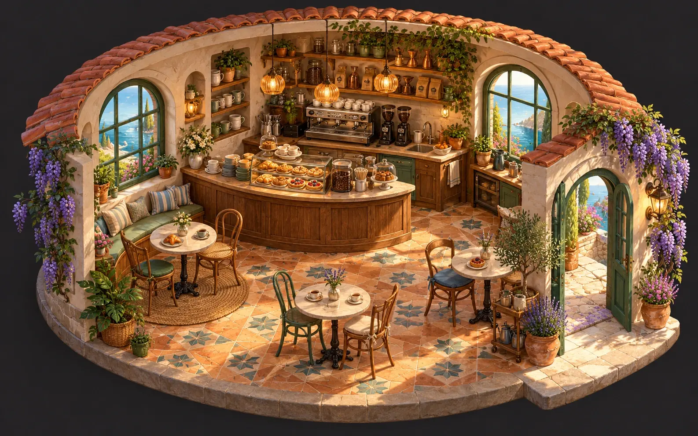

№ D-101● Новый
Клиент А2 позиции · Instagram
120 ₾Создаю сайты для бизнеса и прикладные веб-приложения. Здесь — работающие личные продукты, тестовый операционный прототип и авторская игра. Статус каждого проекта указан отдельно.
Одна мобильная система вместо разрозненных заказов, складских таблиц и финансовых сводок.
Sea Livery привозит в Грузию морские деликатесы из разных стран. Я — операционный директор компании; в проекте OPS отвечал за постановку продукта, рабочие сценарии, UX/UI, организацию AI-assisted разработки и приёмку результатов.
Ручной перенос данных, несвязанные статусы и отдельная финансовая сверка замедляют ежедневную работу. Особенно когда всё приходится делать с телефона.
Экраны тестового контура с вымышленными данными. Системные панели скрыты, чтобы показать главное. Нажмите для увеличения.
Попробуйте фильтр заказов. Все клиенты, суммы и статусы ниже вымышлены.
2 позиции · Instagram
120 ₾3 позиции · Прямой
86 ₾1 позиция · Сайт
214 ₾2 позиции · Прямой
75 ₾Облачное хранение тестовых данных, проверка прав на сервере, контроль версий записей и аккуратная обработка денег.
function toCents(input) {
const value = String(input).trim().replace(',', '.');
if (!/^\d+(\.\d{1,2})?$/.test(value))
throw new Error('Некорректная сумма');
const [major, minor = ''] = value.split('.');
const cents = Number(major) * 100 +
Number(minor.padEnd(2, '0'));
if (!Number.isSafeInteger(cents)) throw Error('Range');
return cents;
}Строгая проверка ввода и расчёты в целых денежных единицах.
const statusView = {
NEW: { label: 'Новый', tone: 'amber' },
IN_WORK: { label: 'В работе', tone: 'blue' },
DELIVERED: { label: 'Доставлен', tone: 'green' }
};
const present = order => ({
...order,
view: statusView[order.status] ??
{ label: 'Неизвестен', tone: 'neutral' }
});Бизнес-состояние не зависит от внешнего вида карточки.
function buildSaveCommand(draft, version, requestId) {
if (!Number.isInteger(version) || version < 0)
throw new Error('Invalid version');
if (!requestId) throw Error('Missing request ID');
return { requestId, expectedVersion: version,
payload: draft };
}Сервер должен отдельно проверять полномочия, версию и повторные операции.
Разработан работающий прототип с облачным хранением тестовых данных. Производственное внедрение и полноценная сквозная приёмка ещё не проводились. Автоматический импорт из внешней системы — следующий этап, а не готовая функция.
Баланс показывает, сколько денег есть. MONO отвечает на другой вопрос: сколько действительно свободно?
Полностью разработанное приложение: мультивалютные счета, резервы, обязательства, быстрый ввод и аналитика. Здесь — отдельная демонстрация логики без доступа к моим финансовым данным.
Измените значения. Расчёт показывает остаток после резервов и обязательств — без смешивания разных валют.
В основе — реальные экраны MONO Finance с iPhone. Для публикации личные суммы, категории и названия счетов заменены вымышленными; это обработанные публичные версии скриншотов, а не доступ к личной базе.



Правила разбора текста заполняют поля операции. Перед сохранением всё можно проверить.
Операции учитываются по валютам. Обмен не создаёт фиктивный доход или расход.
Локальное хранение и резервные копии. Банковская синхронизация не заявляется.
Само MONO Finance — завершённый работающий продукт. Этот интерактивный пример создан специально для портфолио на вымышленных данных; реальные личные операции и счета не публикуются. Подробнее о готовом приложении ↗
Планер, который не наказывает за отдых. Дела, состояние и развитие персонажа живут в одной системе.
Задачи, списки, сон, настроение, дневник и опыт за реальные действия. Путь от игровой идеи до самостоятельного PWA.
Часто планер превращается в гонку за галочками. Здесь развитие персонажа связано с конкретными квестами, а сон, настроение и личные списки не становятся штрафами за «непродуктивность».
Отметьте демонстрационные квесты. Каждая задача даёт опыт только один раз; снятие галочки отменяет начисление.
Пробуждение
Не просто мини-игра, а маленький мир, придуманный для Беллы и пяти наших котов.
Островной город, маршруты, персонажи, работа в ресторане, магазинчики и собственный ритм дня.
Кент стал мэром, Мия — астрономом, Лев — врачом, Цитера открыла книжную лавку, а Рыжий — кофейню. Белла может знакомиться с ними, гулять по острову и работать в ресторане.
Внутри: 2D Canvas, граф дорожных маршрутов, игровые состояния и локальное сохранение. В ходе работы тяжёлую 3D-идею заменили более удобным для телефона 2D-миром.

Тёплое место для короткой остановки, встреч и разговоров. У каждого кота на острове есть своё дело.
Механика, визуальный мир и технология собрались в одно понятное переживание.
Сайт для бизнеса, каталог, веб-приложение, автоматизация или интерактивный прототип. Расскажите, какую задачу нужно решить — предложу разумный формат первого этапа.